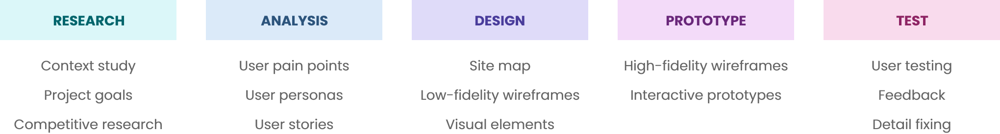

UI/UX Design
In addition to creating and maintaining online services, such as websites, online shops and mobile services, Into-Digital Oy provides thousands of display advertisements to customers every year. To manage display advertising projects, the company uses internally a display advertising management tool.
The objective was to redesign the interface of the client's display advertising management tool. The old display advertising management tool was neither as functional nor visually pleasing as it could be. The site structure and navigation had to be improved. This project was part of my bachelor’s thesis.
Into-Digital Oy
Spring 2021
I was responsible for the whole design process which included research, user stories, sketching, wireframing, visual design, prototyping and user testing.
Adobe XD, Google Forms, Maze
The design process was divided into five following stages:
The old display advertising management tool had been made with fast schedule and was lacking usability. The tool was neither as functional nor visually pleasing as it could be. It was time to make some changes.
1. Improve site structure and navigation to make browsing easier and improve the overall experience
2. Create a more user-friendly and visual interface by improving navigation and site features
3. Add a comment section to fasten the communication between the customer and the company
The project began with user research and getting to know the subject. It was necessary to find out what a display advertising management tool is, who uses it, and why it is necessary. The company’s needs and goals were clarified by interviewing end users.
The tool is used by three user groups: the project manager, the developer and the client. It was necessary to figure out what kind of roles the user groups have with the tool. For example, the client cannot access other projects than their own and cannot edit project information.
Competitive research was made to understand the capabilities of the display advertising management tool and figure out the industry standards.
Based on the background research, it was possible to create user personas. It was important to know how different users are using the tool and find out the frustrations and needs of each user group. There were three user groups in this project: customer, project manager and developer.
One user story was written for each user group. Writing user stories helped to narrow down ideas and focus on the needs of the user.
The structure of the site was designed based on the old version, but minor changes were made. A comment field was added to the preview, where the customer and the company can discuss issues related to the project. In user settings, the user can edit user-related issues, such as changing the password. The overall structure of the site was improved to ease navigation.
Wireframes were made with Adobe XD. The first wireframes were very simple because the intention was to focus on the functionality of the site. The wireframe shows the basic structure of the site, the main components and user progress between pages. With small color differences it was possible to highlight the most important things.
All the colors, text style definitions, and icons that would be used in the project were gathered on one artboard. The visual style library keeps the elements of the project in order and helps the developer’s work during the production phase. The colors in this project was kept very clear and simple. The colors chosen were different shades of blue and a few accent colors.
Next, images, content texts, and colors were added to the wireframe. The goal was to create a mockup to present the final site. Mockup gave a realistic picture of what the final product looks like, how it feels, and how it reacts to the user. Making the mockup as realistic as possible provides more accurate feedback from users during the testing phase, and that helps creating a better user experience.
A interactive prototype was developed by using the Prototype tool in Adobe XD. Making the prototype provided an opportunity to test the functionality of the user interface and the user experience. Links were created between the pages based on which paths the user would take on the site to achieve some kind of goal.
User testing was implemented by making a user survey using a combination of Google Forms and Maze testing tool. With Google Forms you can create rich questionnaires, and with Maze you can test prototypes and do user testing.
Testers who were included in the survey were Into-Digital's employees, one project manager and two developers. The questionnaire was sent via a link to the testers, who conducted the survey independently on their own time. Because different user groups were involved in the testing, more diverse answers were obtained about how the tool works for different user types.
- User tester
The most significant goal was achieved by designing a new interface for the client’s display advertising management tool. The new interface improved the site’s user experience, navigation, and overall visual look. Adding a comment field helps and fastens the interaction between the customer and the company.
From the results of the project it can be concluded that all design projects follow some kind of design process. There is no one right design process because every project needs a different approach. Following a design process is important to make sure that the product is as good and usable as possible.